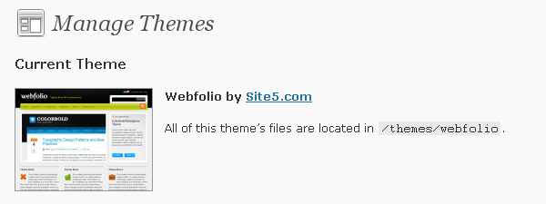

1. Unzip the file that you have downloaded, you will find a folder called "webfolio".
2. To install the theme you should have already wordpress installed and running on your server. Using FTP, upload the "rockwell" theme folder to your web server, and place it in "/WP-contents/themes/". So what you'll have in the end is "wp-contents/themes/webfolio/".
3. Now that you have the theme uploaded you just need to login to your WP admin panel and activate it "Appearance > Themes".

This themes comes with a custom options page ( Appearance > Webfolio Options) where you will find:
1. Set up your site logo - You have enter the full path to an image logo and the image ALT text.
2. Cufon Text Replacement - The theme uses by default "Fertigo Pro" font for H1, H2, and top tagline text replacement. You can disable this by setting to "No". This way the font used will be Arial. You can use different font with Cufon if you want, you just need to generate your font cufon script and change the path in header.php. Here is where you can generate the script for your font: http://cufon.shoqolate.com/generate/
3. Portfolio Category ID - You must specify this because for portfolio page, as you see on live demo, a special template is used.
4. Email Address for Contact Form - As the theme comes with a working Ajax contact form you need to specify your address in order to get the messages on your email.
5. Exclude Pages IDs from Top & Footer Menu & Exclude Categories IDs from Top Menu - As for the homepage boxes you will need to create some pages that not should be linked in the top menu and the top menu lists the pages and categories available, here you need to enter the IDs of the pages and categories that shouldnt appear on the main navigation.
6. Homepage Boxes - Simply create pages with small contnet to be displayed on the homepage and select the pages from dropdowns for each box. If you later want to make them not visible you simply need to let a single homebox not set.
7. Social Networking - You can enable or disable the footer "Social Networking" box. As the footer is a widget ready area if you choose to disable it you can have 3 wordpress widgets set there. If enabled you have to eneter your social links. It is not necessary to have them all set.
8. Add Google Analytics code - Simply fill in the filed for Analytics code and save.
For having featured posts displayed in the homepage slider you will need to:
1. On the post edit page have a text set for Excerpt field.
2. Set up a custom field called "featured" with value "1".
3. Set up a custom field called "featured_image" and enter the full path to the image you want to be displayed in the in slider. Please rememeber that this image has to be 600px X 337px in size.
For portfolio page a template is used, portfolio.php, which makes use of TimThumb image resizing script ( timthumb.php ). You should know that the first image found in the post content is resized and displayed on portfolio page.
When you create the Contact page, you will need to set the "Contact" template for it ( right side Attributes panel ), in order to have the contact page as in preview and have it Ajax functional.
For adding Lightbox behaviour to a link just add class="lightbox" to the link tag.